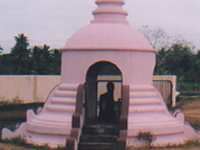

Kuttanad Backwaters
The beautiful backwaters of Kuttanad are famous for their Kettuvalloms(Houseboats). There are several villages in the Kuttanad region and people travel from one place to the other by boats. Vendors even go from house to house on their boats to sell vegetables, fish and small household goods.
Ambalappuzha Sree Krishna Temple , Alappuzha

A temple dedicated to infant Krishna, this temple draws thousands of devotees during the month of April, which is when the annual festival is held. The Pallipana ceremony held once in 12 years witnesses performances by sorcerers. The temple is famous for its offering of Palpayasam, a milk and rice pudding.
Chakkulathukavu Bhagavathi Temple

The deity of this temple is Bhadrakali who is believed to confer devotees with blessings of health, wealth and peace of mind. The temple in Chettikulangara has the largest stone lamp in the country – 11 feet high with 13 tiers. The Kettukazhcha festival held at the temple is a colourful affair which ends with an all-night Kathakali performance.
St.Mary's Church,Champakulam
The church draws hundreds of devotees during the annual feast held in the month of October. The feast of St Joseph in March is also an important event. The church is built on the site which is believed to be one of the seven sites on which St Thomas had built churches. Wooden statues of Christ which are made near by, are exported to various countries.
Chettikulangara Bhagavathi Temple
The deity of this temple is Bhadrakali who is believed to confer devotees with blessings of health, wealth and peace of mind. The temple in Chettikulangara has the largest stone lamp in the country – 11 feet high with 13 tiers. The Kettukazhcha festival held at the temple is a colourful affair which ends with an all-night Kathakali performance.
Mannarasala Snake Temple
Worshippers of the Naga (Serpent God) have always built their temples in groves where serpents are aplenty. Mannarassala is the largest serpent temple with 30,000 images of serpent Gods and has hundreds of snakes living around the temple. Childless women come to the temple and pray to be blessed with the gift of motherhood. When their prayers are answered they return for thanksgiving, with offerings equalling the weight of the baby born to them.
Chavara Bhavan
Chavara Bhavan, the ancestral home of the blessed Kuriakose Elias Cavara. It’s now a holy shrine and a spiritual resort, where thousands of travellers, devotees and tourists gather together to pray, receive favours and search for happiness.Most guests come here to say their prayers and witness the place where the blessed Kuriakose Elias Chavara was born. The amazing history and the ambience of this area mean that it is a good place for holidaymakers to reflect, relax and gain a much deeper sense of understanding of one's faith. Located 6 km away from Alappuzha Town, Chavara Bhavan is accessible only by boat. Situated in Kainakary, it is the ancestral home of Father Kuriakose a.k.a. Chavara. Father Chavara was one among the three Malayali candidates who were considered for sainthood by Rome.
Karumadi Kuttan
The idol of Karumadi Kuttan which stands to the west of the Kamapuram Temple is the statue of a black granite Buddha, believed to have been built in the 9th or 10th century. The deity is now placed in a small shrine to protect it.
Krishnapuram Palace Museum
Built during the rule of Maharaja Marthanda Varma, this palace is somewhat similar to the Padmanabhapuram Palace in Trivandrum although this one is smaller in size. The 16 block building sprawls over an area of 1.87 acres. It is now an archeological museum with paintings, antiques, swords, ancient vessels and many more antiquities.
Pathiramanal Island

Folk lore has that the island was formed when a young Brahmin priest dived into the Vembanad Lake to perform his evening prayers. The water gave way for land at the spot that the priest jumped and thus Pathiramanal, meaning sands of midnight, was formed. The palm covered island on the Vembanad Lake, is the haunt of hundreds of rare migratory birds. Pathiramanal Island belongs to the tourism department. It is a one hour boat ride from Alappuzha.
Marari Beach
Right in the heart of the "spice coast" just an hour from Cochin and even less to Alappuzha(Alleppey) is the most fabulous stretch of soft sandy beach fringed with palms, an idyllic retreat for those who want to get away from the hustle and bustle of city life. Marari originates from "Mararikulam", one of the local fishing villages, where life still goes on much as it did a hundred years ago, with the men going out to sea each day to earn a living bringing in the daily catch.
Kumarakodi
Situated 20 km south of Alappuzha, Kumarakodi is the final resting place of Kumaranasan, one of the greatest poets of Malayalam Literature. Known as Mahakavi Kumaranasan, his literary classics breathed new life into Malayalam Literature. He passed away in a boat mishap on the backwaters, when he was 50 years old. Located on the banks of Pallana River, Kumarakodi is close to Harippad town. Pattanichira Bridge connecting Thrikunnapuzha and Karuvatta Panchayaths is a short-cut to Mahakavi's tomb.
Edatuya Church
Situated 24 km away from Alappuzha, on the Alappuzha - Thiruvalla Road, Edatuya Church was established in 1810. The church is dedicated to St. George. It is believed that prayers and offerings at this church help cure all mental disorders and other ailments. During the annual feast (5th, 6th, 7th of May) pilgrims from all parts of South India, irrespective of caste and creed, visit the church and seek the blessings of the saint.
Allepey Beach
Alappuzha (Alleppey) Beach is one of the most popular tourist spots in Kerala. The pier which extends into the sea is around 140 years old. It is a perfect spot to picnic with family. Entertainment facilities at the Vijaya Beach Park add to the attraction of the Alappuzha beach. There is also an old lighthouse nearby that is of immense interest for the visitors.